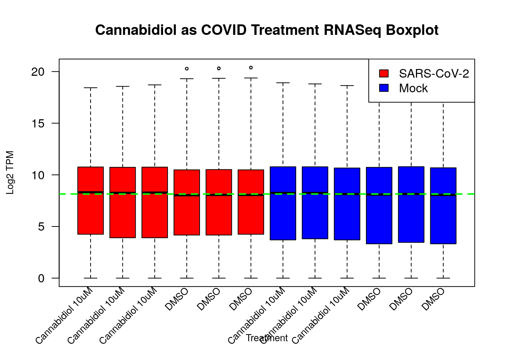
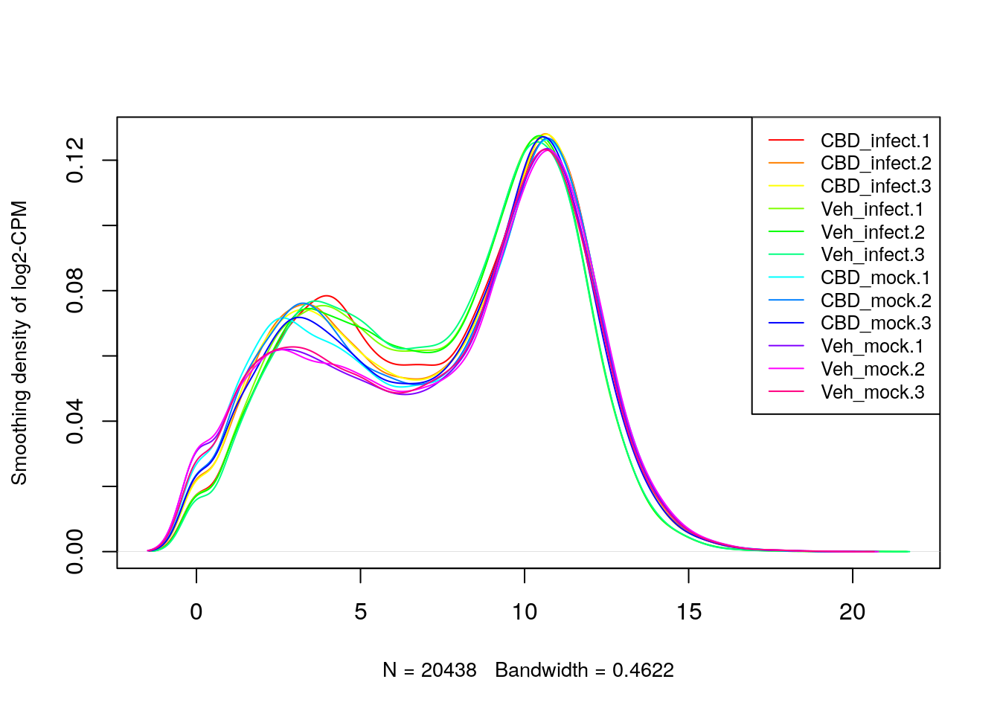
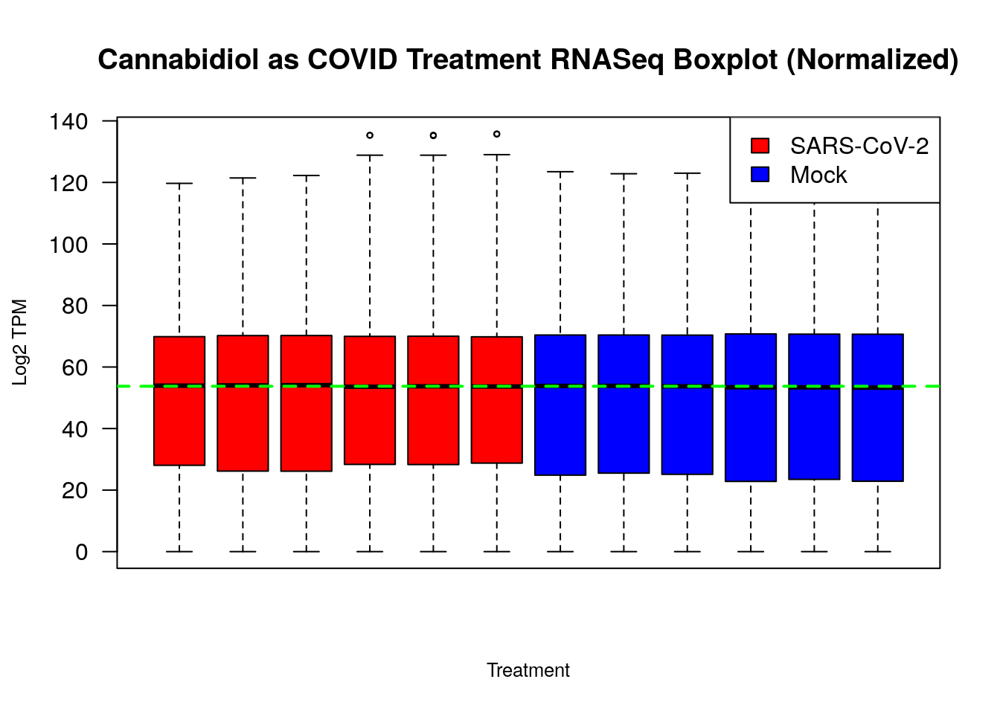
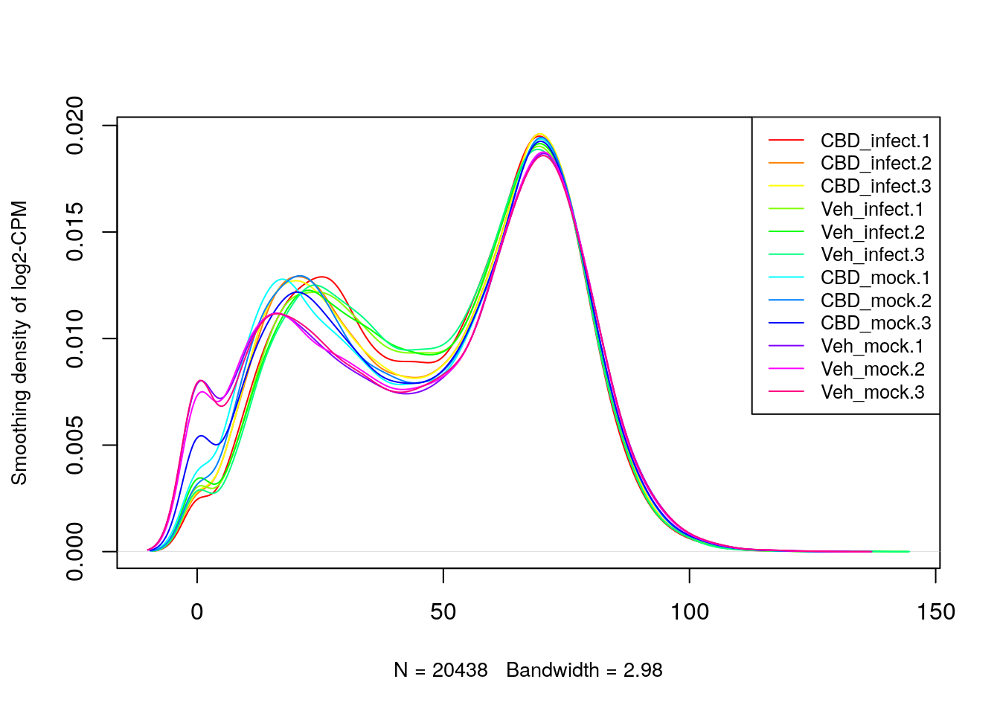

This Rmarkdown document details my steps in cleaning and preprocessing my chosen dataset from the NCBI’s Gene Expression Omnibus (GEO). The dataset I chose is associated with “Cannabidiol Inhibits SARS-CoV-2 Replication through Induction of the Host ER Stress and Innate Immune Responses”, with the dataset identifier being GSE168797.
In the process of my work here, I noticed that my dataset has already
been normalized, despite running the pipeline with the two separate
supplementary files given via GEO. Regardless, I have still gone over
the steps I would do to normalize my dataset (i.e., had it not been
normalized) and will compare my visualizations before and after
“normalization” to verify that the dataset is indeed normalized. The
authors had done their normalization using the DESeq2
package, but I will be using the edgeR package for my
normalization to compare/contrast.
First we make sure that the packages we need are installed. Prior to installing, we check if the package already exists in the environment. If not, we install the package.
# Check if Biocondutor is installed
if (!requireNamespace("BiocManager", quietly = TRUE))
install.packages("BiocManager")
# Install GEOquery
if (!requireNamespace("GEOquery", quietly = TRUE))
BiocManager::install("GEOquery")
# Install biomaRt
if (!requireNamespace("biomaRt", quietly = TRUE))
BiocManager::install("biomaRt")
# Install knitr
if (!requireNamespace("knitr", quietly = TRUE))
install.packages("knitr")
# Install data.table
if (!requireNamespace("data.table", quietly = TRUE))
install.packages("data.table")
# Install edgeR
if (!requireNamespace("edgeR", quietly = TRUE))
BiocManager::install("edgeR")Then before we move to cleaning the data, we’ll load it from GEO
using GEOquery.
Information on the platform the researchers used to get this data is also important and is listed below:
current_gpl <- names(GEOquery::GPLList(gse))[1]
current_gpl_info <- GEOquery::Meta(GEOquery::getGEO(current_gpl))
# Print the data
cat(
c(
sprintf("Platform title:\t\t%s", current_gpl_info$title),
sprintf("Submission data:\t\t%s", current_gpl_info$submission_date),
sprintf("Last update data:\t%s", current_gpl_info$last_update_date),
sprintf("Organism:\t\t\t%s", current_gpl_info$organism),
sprintf("Total GEO Datasets:\t%s", length(current_gpl_info$series_id)),
sprintf("Total GEO Samples:\t%s", length(current_gpl_info$sample_id))
),
sep = "\n"
)## Platform title: Illumina NovaSeq 6000 (Homo sapiens)
## Submission data: Mar 02 2018
## Last update data: Nov 05 2018
## Organism: Homo sapiens
## Total GEO Datasets: 12914
## Total GEO Samples: 847368Given the platform used to generate the data, we can now take a look and see which supplementary files were included with the GEO record for GSE168797.
# Get the supplementary files
supplementary_files <- GEOquery::getGEOSuppFiles(dataset_geo_id, fetch_files = FALSE)
# Get the file names prefixed with their number in the list
file_names <- paste0("\t", seq_along(supplementary_files$fname), ". ", supplementary_files$fname)
# Print the data
cat(
c(
sprintf("Total supplementary files:\t%s", length(supplementary_files)),
sprintf("Supplementary files:\n%s", paste(file_names, collapse = "\n"))
),
sep = "\n"
)## Total supplementary files: 2
## Supplementary files:
## 1. GSE168797_CBDV_raw_counts.txt.gz
## 2. GSE168797_Raw_gene_counts_matrix.txt.gzFor our analysis, we will be working with the raw data (i.e., #2
above). We can use GEOquery to download the supplementary
file and then load it into R.
# Specify the file to download and the download directory
file_to_download <- supplementary_files$fname[2]
download_dir <- file.path(getwd(), "data")
# Check if the directory exists, if not, create it
if (!dir.exists(download_dir))
dir.create(download_dir)
# Check if the file exists, if not, download it
file_path <- file.path(download_dir, dataset_geo_id, file_to_download)
if (!file.exists(file_path))
GEOquery::getGEOSuppFiles(
dataset_geo_id,
filter_regex = file_to_download,
baseDir = download_dir,
fetch_files = TRUE
)
# Remove any folder in the working directory named dataset_geo_id
if (dir.exists(file.path(getwd(), dataset_geo_id)))
unlink(file.path(getwd(), dataset_geo_id), recursive = TRUE)With the dataset downloaded, we can verify if it’s indeed the full raw dataset by checking some simple metadata/statistics of the file. One example would be to check the number of unique identifiers (i.e., the rows) in the dataset to see if it’s close to mirrorring the number of genes in the human genome.
# Load the dataset
dataset <- read.table(
file.path(download_dir, dataset_geo_id, file_to_download),
header = TRUE,
check.names = TRUE,
)
# Output number of rows and columns
cat(
c(
sprintf("Number of rows:\t\t%s", nrow(dataset)),
sprintf("Number of columns:\t%s", ncol(dataset))
),
sep = "\n"
)## Number of rows: 57832
## Number of columns: 13With 57832 rows, that’s well over the number of genes in the human genome. This hints that the dataset contains information on multiple variants. Furthermore, within these rows, there are 0 duplicate gene identifiers.
# Output the number of unique gene identifiers
cat(
c(
sprintf("Number of unique gene identifiers:\t%s", length(unique(dataset$Gene))),
sprintf("Number of duplicate gene identifiers:\t%s", sum(duplicated(dataset$Gene)))
),
sep = "\n"
)## Number of unique gene identifiers: 57832
## Number of duplicate gene identifiers: 0To understand what each sample/condition is within those columns, we
must look into the metadata of each sample. We can use our initial
gse object to get the metadata of the samples.
# Create a data frame to store the metadata. Each row will represent a sample.
sample_metadata <- data.frame(
sample_id = character(),
title = character(),
organism = character(),
cell_line = character(),
infection = character(),
treatment = character(),
stringsAsFactors = FALSE
)
samples <- gse@gsms
# Get the sample metadata for each non-Gene column and add the metadata to a data frame.
for (i in 1:(ncol(dataset) - 1)) {
# Get the cell line, infection, and treatment from the characteristics
cell_line <- gse@gsms[[i]]@header$characteristics_ch1[1]
infection <- gse@gsms[[i]]@header$characteristics_ch1[2]
treatment <- gse@gsms[[i]]@header$characteristics_ch1[3]
# Add the metadata to the data frame
sample_metadata <- rbind(
sample_metadata,
data.frame(
sample_id = colnames(dataset)[i + 1],
title = gse@gsms[[i]]@header$title,
organism = gse@gsms[[i]]@header$organism_ch1,
cell_line = cell_line,
infection = infection,
treatment = treatment,
stringsAsFactors = FALSE
)
)
}
# Remove redundant text from the characteristics in the metadata
sample_metadata$cell_line <- gsub("cell line: ", "", sample_metadata$cell_line)
sample_metadata$infection <- gsub("infection: ", "", sample_metadata$infection)
sample_metadata$treatment <- gsub("treatment: ", "", sample_metadata$treatment)
# Remove <sample_id> and set the row names to the sample_id
rownames(sample_metadata) <- sample_metadata$sample_id
sample_metadata$sample_id <- NULL
# Display using kable
knitr::kable(sample_metadata)| title | organism | cell_line | infection | treatment | |
|---|---|---|---|---|---|
| CBD_infect.1 | A549_CBD_infect-1 | Homo sapiens | A549 cells with ACE2 overexpression | SARS-CoV-2 MOI 3 | Cannabidiol 10uM |
| CBD_infect.2 | A549_CBD_infect-2 | Homo sapiens | A549 cells with ACE2 overexpression | SARS-CoV-2 MOI 3 | Cannabidiol 10uM |
| CBD_infect.3 | A549_CBD_infect-3 | Homo sapiens | A549 cells with ACE2 overexpression | SARS-CoV-2 MOI 3 | Cannabidiol 10uM |
| Veh_infect.1 | A549_Veh_infect-1 | Homo sapiens | A549 cells with ACE2 overexpression | SARS-CoV-2 MOI 3 | DMSO |
| Veh_infect.2 | A549_Veh_infect-2 | Homo sapiens | A549 cells with ACE2 overexpression | SARS-CoV-2 MOI 3 | DMSO |
| Veh_infect.3 | A549_Veh_infect-3 | Homo sapiens | A549 cells with ACE2 overexpression | SARS-CoV-2 MOI 3 | DMSO |
| CBD_mock.1 | A549_CBD_mock-1 | Homo sapiens | A549 cells with ACE2 overexpression | Mock | Cannabidiol 10uM |
| CBD_mock.2 | A549_CBD_mock-2 | Homo sapiens | A549 cells with ACE2 overexpression | Mock | Cannabidiol 10uM |
| CBD_mock.3 | A549_CBD_mock-3 | Homo sapiens | A549 cells with ACE2 overexpression | Mock | Cannabidiol 10uM |
| Veh_mock.1 | A549_Veh_mock-1 | Homo sapiens | A549 cells with ACE2 overexpression | Mock | DMSO |
| Veh_mock.2 | A549_Veh_mock-2 | Homo sapiens | A549 cells with ACE2 overexpression | Mock | DMSO |
| Veh_mock.3 | A549_Veh_mock-3 | Homo sapiens | A549 cells with ACE2 overexpression | Mock | DMSO |
Before we move to the next step, we need to map the gene identifiers
to gene symbols. We can use the biomaRt package to do
this.
# Set up the mapping using the bimap interfaces
ensembl <- biomaRt::useEnsembl(biomart = "ensembl", dataset = "hsapiens_gene_ensembl")
gene_ids <- unique(dataset$Gene)
# Remove the version number from the gene identifiers
gene_ids <- gsub("\\..*", "", gene_ids)
# Map the gene identifiers to gene symbols
gene_mapping <- biomaRt::getBM(
attributes = c("ensembl_gene_id", "external_gene_name"),
filters = "ensembl_gene_id",
values = gene_ids,
mart = ensembl
)
# Print the first few rows of the mapping
knitr::kable(head(gene_mapping))| ensembl_gene_id | external_gene_name |
|---|---|
| ENSG00000000003 | TSPAN6 |
| ENSG00000000005 | TNMD |
| ENSG00000000419 | DPM1 |
| ENSG00000000457 | SCYL3 |
| ENSG00000000460 | FIRRM |
| ENSG00000000938 | FGR |
# Modify the dataset to rename the current 'Gene' column to 'Ensembl ID'
colnames(dataset)[1] <- "Ensembl ID"
# Add a column to the dataset for the gene symbols
dataset$Gene <- gene_mapping$external_gene_name[match(gene_ids, gene_mapping$ensembl_gene_id)]We’ve mapped the Ensembl identifiers to gene symbols in our main
dataset object. We’ll now check to see how many of the
identifiers correctly mapped to a gene symbol.
num_unique_gene_symbols <- length(unique(dataset$Gene))
num_na_gene_symbols <- sum(is.na(dataset$Gene))
num_duplicate_gene_symbols <- sum(duplicated(dataset$Gene)) - num_na_gene_symbols
# Output the number of unique gene symbols
cat(
c(
sprintf("Number of unique gene symbols:\t\t\t%s", num_unique_gene_symbols),
sprintf("Number of NA gene symbols:\t\t\t%s", num_na_gene_symbols),
sprintf("Number of duplicate (non-NA) gene symbols:\t%s", num_duplicate_gene_symbols)
),
sep = "\n"
)## Number of unique gene symbols: 38754
## Number of NA gene symbols: 5831
## Number of duplicate (non-NA) gene symbols: 13247Since there’s a handful of gene identifiers that didn’t map to a gene symbol, this elicits further investigation. Taking some of these NA identifiers at random, we can query the Ensembl database manually (through the web interface) to see what they’re returning.
# Set a seed for reproducibility
set.seed(123)
# Get a random sample of 5 NA gene identifiers
na_gene_ids <- gene_ids[is.na(dataset$Gene)]
na_gene_ids_sample <- sample(na_gene_ids, 5)
# Print the sample
cat(
c(
"Random sample of NA gene identifiers:",
paste0("\t", na_gene_ids_sample)
),
sep = "\n"
)## Random sample of NA gene identifiers:
## ENSG00000238605
## ENSG00000238690
## ENSG00000237133
## ENSG00000203471
## ENSG00000264489From the random sample, all the identifiers return the same output from Ensembl in that they were part of an older version of the database. Before proceeding with our analysis, we will drop these NA identifiers from the dataset under the assumption that newer versions are available (and if present in our dataset, mapped to a gene symbol).
# Store the removed rows in a separate object
removed_rows <- dataset[is.na(dataset$Gene), ]
# Remove the rows with NA gene symbols
dataset <- dataset[!is.na(dataset$Gene), ]
# Output the number of rows and columns
cat(
c(
sprintf("Number of rows after removing NA gene symbols:\t%s", nrow(dataset)),
sprintf("Number of columns:\t\t\t\t\t%s", ncol(dataset))
),
sep = "\n"
)## Number of rows after removing NA gene symbols: 52001
## Number of columns: 14For identifiers that weren’t successfully mapped to a symbol (i.e., an empty gene symbol), we will also remove these from the dataset.
# Count the number of rows with empty gene symbols
num_empty_gene_symbols <- sum(dataset$Gene == "")
# Remove the rows with empty gene symbols
dataset <- dataset[dataset$Gene != "", ]
# Output the number of rows and columns
cat(
c(
sprintf("Number of rows after removing rows with empty gene symbols:\t%s", nrow(dataset)),
sprintf("Number of columns:\t\t\t\t\t\t%s", ncol(dataset))
),
sep = "\n"
)## Number of rows after removing rows with empty gene symbols: 39649
## Number of columns: 14Another pre-processing step we should handle before looking into duplicate symbols is to check for rows with 0 expression across all samples. We can do this by summing the expression values for each row and counting the number of rows with a sum of 0.
# Get the sum of expression values for each row
row_sums <- rowSums(dataset[, 2:(ncol(dataset) - 1)])
# Count the number of rows with 0 expression across all samples
num_zero_expression <- sum(row_sums == 0)
# Output the number of rows with 0 expression across all samples
cat(
sprintf("Number of rows with 0 expression across all samples:\t%s", num_zero_expression)
)## Number of rows with 0 expression across all samples: 9301Given the result, we will remove these rows from the dataset.
# Remove the rows with 0 expression across all samples
dataset <- dataset[row_sums != 0, ]
# Output the number of rows and columns
cat(
c(
sprintf("Number of rows after removing rows with 0 expression:\t%s", nrow(dataset)),
sprintf("Number of columns:\t\t\t\t\t%s", ncol(dataset))
),
sep = "\n"
)## Number of rows after removing rows with 0 expression: 30348
## Number of columns: 14Now with only our (presumed) valid/relevant expression values in the dataset, we should look to see if any of them are duplicated.
# Identify duplicate gene symbols
duplicate_gene_symbols <- unique(dataset$Gene[duplicated(dataset$Gene)])
# Output how many duplicate gene symbols there are
cat(
sprintf("Number of duplicate gene symbols:\t%s", length(duplicate_gene_symbols))
)## Number of duplicate gene symbols: 26Given the small number of duplicate gene symbols, we can combine
their counts in a new dataframe that will forego the
Ensembl ID column and instead have the gene symbols as the
row names.
# Subset all the rows from <dataset> with the duplicate gene symbols
duplicate_entries <- dataset[dataset$Gene %in% duplicate_gene_symbols, ]
# Specify the columns to aggregate
cols_to_aggregate <- names(duplicate_entries)[2:(ncol(duplicate_entries) - 1)]
# Create a formula for aggregation
agg_formula <- as.formula(paste(" ~ Gene", sep = ""))
# Combine the counts of the duplicate gene symbols
combined_dupe_counts <- aggregate(duplicate_entries[, cols_to_aggregate], by = list(duplicate_entries$Gene), FUN = sum)
# Set the row names
rownames(combined_dupe_counts) <- combined_dupe_counts$`Group.1`
combined_dupe_counts$`Group.1` <- NULLWe can now combine the counts of the duplicate gene symbols in the main dataset.
# Create a new dataframe that duplicates <dataset> minus the duplicate gene symbols
dataset_no_dupes <- dataset[!dataset$Gene %in% duplicate_gene_symbols, ]
# Set the row names
rownames(dataset_no_dupes) <- dataset_no_dupes$Gene
dataset_no_dupes$Gene <- NULL
# Remove the Ensembl ID column
dataset_no_dupes$`Ensembl ID` <- NULL
# Combine the counts of the duplicate gene symbols
combined_counts <- rbind(dataset_no_dupes, combined_dupe_counts)We want to assess the condition where cells have been infected with
SARS-CoV-2. Within this subset, we will examine the effects
of Cannabidiol 10uM treatment versus the control
(DMSO).
sample_type_dt <- data.table::data.table(sample_metadata)
knitr::kable(sample_type_dt[, .(count = .N), by = sample_metadata$infection])| sample_metadata | count |
|---|---|
| SARS-CoV-2 MOI 3 | 6 |
| Mock | 6 |
Since we have 6 samples for each of our conditions, we will remove
genes that do not have at least 1 cpm (counts per million) in at least 6
samples. We will use the edgeR package to do this.
min_num_samples <- 6
# Duplicate the cleaned dataset without rownames
cleaned_dataset_no_rownames <- combined_counts
rownames(cleaned_dataset_no_rownames) <- NULL
# Remove genes with low counts
keep <- edgeR::cpm(cleaned_dataset_no_rownames > 1) >= min_num_samples
keep_sums <- rowSums(keep)
keep <- keep_sums >= min_num_samples
cleaned_dataset <- combined_counts[keep, ]
# Save the cleaned dataset to an Rda
save(cleaned_dataset, file = file.path(download_dir, dataset_geo_id, "cleaned_dataset.Rda"))
# Output the number of rows and columns
cat(
c(
sprintf("Number of rows in the final cleaned dataset:\t%s", nrow(cleaned_dataset)),
sprintf("Number of columns:\t\t\t\t\t\t\t%s", ncol(cleaned_dataset))
),
sep = "\n"
)## Number of rows in the final cleaned dataset: 20438
## Number of columns: 12Before we proceed with any normalization steps, we will visualize the data. This will give us a point of comparison as to the effects of normalization (as we’ll plot after the fact too).
# Transform the data by applying log2 to the expression values
data2plot <- log2(cleaned_dataset)
# Change the column names to correspond to the treatment type from <sample_metadata>
colnames(data2plot) <- sample_metadata$treatment[match(colnames(data2plot), rownames(sample_metadata))]
box_colors <- c(rep("red", 6), rep("blue", 6))
# Create a boxplot without x-axis labels
boxplot(data2plot, xaxt = "n", las = 2, main = "Cannabidiol as COVID Treatment RNASeq Boxplot", ylab = "Log2 TPM", xlab = "Treatment", cex = 0.5, cex.lab = 0.8, col = box_colors)
# Draw the median line
abline(h = median(apply(data2plot, 2, median)), col = "green", lty = 2, lwd = 2)
# Add x-axis labels manually with a 45 degree rotation
text(x = 1:length(data2plot), y = par("usr")[3] - 0.2, srt = 45, adj = 1, labels = names(data2plot), xpd = TRUE, cex = 0.8)
# Add a legend (red - SAR-CoV-2, blue - Mock)
legend("topright", legend = c("SARS-CoV-2", "Mock"), fill = c("red", "blue"))
# Apply a density function to the data for plotting
counts_density <- apply(log2(cleaned_dataset), 2, density)
# Calculate the density limits across all samples
xlim <- 0
ylim <- 0
for (i in seq_along(counts_density)) {
xlim <- range(c(xlim, counts_density[[i]]$x))
ylim <- range(c(ylim, counts_density[[i]]$y))
}
cols <- rainbow(length(counts_density))
ltys <- rep(1, length(counts_density))
# Iniiate the density plot
plot(counts_density[[1]],
xlim = xlim, ylim = ylim, type = "n",
ylab = "Smoothing density of log2-CPM",
main = "", cex.lab = 0.85
)
# Add the density lines for each sample
for (i in seq_along(counts_density)) {
lines(counts_density[[i]], col = cols[i], lty = ltys[i])
}
# Add a legend with the column names (i.e., sample/condition) as the labels
legend("topright", legend = colnames(cleaned_dataset), col = cols, lty = ltys, cex = 0.8)
With the dataset cleaned, we can now apply normalization to the
expression values. We will use the edgeR package to
normalize the data.
# Create a second object to store the normalized data
normalized_dataset <- cleaned_dataset
# Remove the row names
rownames(normalized_dataset) <- NULL
# Log2 transform the data
normalized_dataset <- log2(normalized_dataset + 1)
# Create the edgeR container for the count data
d <- edgeR::DGEList(counts=normalized_dataset, group=sample_metadata$treatment)
# Calculate the normalization factors
d <- edgeR::calcNormFactors(d)
# Normalize the data
normalized_dataset <- edgeR::cpm(d)
# Plot the normalized data
boxplot(normalized_dataset, xaxt = "n", las = 2, main = "Cannabidiol as COVID Treatment RNASeq Boxplot (Normalized)", ylab = "Log2 TPM", xlab = "Treatment", cex = 0.5, cex.lab = 0.8, col = box_colors)
# Draw the median line
abline(h = median(apply(normalized_dataset, 2, median)), col = "green", lty = 2, lwd = 2)
# Add x-axis labels manually with a 45 degree rotation
text(x = 1:length(normalized_dataset), y = par("usr")[3] - 0.2, srt = 45, adj = 1, labels = names(normalized_dataset), xpd = TRUE, cex = 0.8)
# Add a legend (red - SAR-CoV-2, blue - Mock)
legend("topright", legend = c("SARS-CoV-2", "Mock"), fill = c("red", "blue"))
# Density plot
counts_density <- apply(normalized_dataset, 2, density)
xlim <- 0
ylim <- 0
for (i in seq_along(counts_density)) {
xlim <- range(c(xlim, counts_density[[i]]$x))
ylim <- range(c(ylim, counts_density[[i]]$y))
}
cols <- rainbow(length(counts_density))
ltys <- rep(1, length(counts_density))
plot(counts_density[[1]],
xlim = xlim, ylim = ylim, type = "n",
ylab = "Smoothing density of log2-CPM",
main = "", cex.lab = 0.85
)
for (i in seq_along(counts_density)) {
lines(counts_density[[i]], col = cols[i], lty = ltys[i])
}
legend("topright", legend = colnames(normalized_dataset), col = cols, lty = ltys, cex = 0.8)
1. Why is the dataset of interest to you?
This dataset piques my interest because I have always been curious about cannabis and its effects on the human body. Most of my interest on this front lies on the potential to target the effects of tetrahydrocannabinol (THC) to “cater a high”.
However, this dataset focuses on cannabidiol (CBD) which is a non-psychoactive compound found in cannabis. I’ve known that this compound has multiple therapeutic effects (i.e., treating epilepsy), and it’s interesting to see it come up again but in the context of COVID-19. Especially given that the pandemic is only recently behind us, it’s interesting to see how this compound could have been used to treat the virus.
2. What are the control and test conditions of the dataset?
The control treatment in this dataset is DMSO (dimethyl
sulfoxide) and the test condition is Cannabidiol 10uM.
There are two “sets” of these conditions, one where the cells were
infected with SARS-CoV-2 and the other where the cells were
not infected (denoted as Mock in the data).
3. How many samples in each of the conditions of your dataset?
Each condition (i.e., based on the sort of infection - SARS-CoV-2 or Mock) had 6 samples.
4. Were there expression values that were not unique for specific genes? How did you handle these?
There were a few genes that had duplicates in the data (more discussed in Q7). Beyond these duplicates and lack of a unique readout, there were also a fair amount of genes that had 0 expression across all conditions/samples. I handled these by removing the rows with 0 expression across all samples from the dataset.
5. Were there expression values that could not be mapped to current HUGO symbols?
Yes, there were a few gene identifiers that couldn’t be mapped to a gene symbol. I handled this by removing these rows from the dataset under the assumption that newer versions are available (and if present in our dataset, mapped to a gene symbol).
To verify that the Ensembl IDs were indeed deprecated, I had randomly
sampled (using the seed 123 for reproducibility) from the
list of IDs which returned an NA gene symbol, and then manually queried
the Ensembl database to see what they were returning. All the
identifiers returned the same output from Ensembl in that they were part
of an older version of the database.
6. Were there any outliers in your dataset? How were they handled in the originating paper? How many outliers were removed?
Since the dataset I have been working with has already been
normalized, I did not have to handle any explicit outliers. Furthermore,
the paper does not mention any method on removing outliers. However,
their analyses did use certain cut offs/thresholds depending on the
analysis being performed. For example, gene set enrichment analyses were
performed using the Metascape method, where they had used a
q value of 0.05 as the threshold for significance.
7. How did you handle replicates?
There were a handful of genes that had duplicate entries. I noticed this after mapping the Ensembl IDs to gene symbols which resulted in some rows (each of them uniquely identified by the Ensembl ID) being mapped to the same gene symbol.
I handled this by combining (i.e., summing) the counts of the duplicate gene symbols in a new dataframe. This let me collapse the duplicates into single rows which I could then merge with the non-dupe portion of the main dataset into a new dataframe for further analysis.
8. What is the final coverage of your dataset?
The final dataset has 20 438 rows which correspond to unique gene symbols. This is in contrast to the original dataset which had 57 832 rows.